Bewegung und Gesundheit
| Website: | Schulische Weiterbildung & Lernwelt @ VHS Essen |
| Kurs: | 1./2. Fachsemester Turbo 1 Frau Rollhäuser |
| Buch: | Bewegung und Gesundheit |
| Gedruckt von: | Robin Fehlhaber |
| Datum: | Samstag, 19. September 2026, 19:58 |
1. Bewegungssystem
Das Bewegungssystem des menschlichen Körpers wird vom Skelett, von den Gelenken, den Muskeln und den Sehnen (verbinden Knochen und Muskeln miteinander) gebildet. Mit seiner Hilfe sind wir zu Bewegungen wie etwa Bücken, Hüpfen, Laufen oder Tanzen fähig.
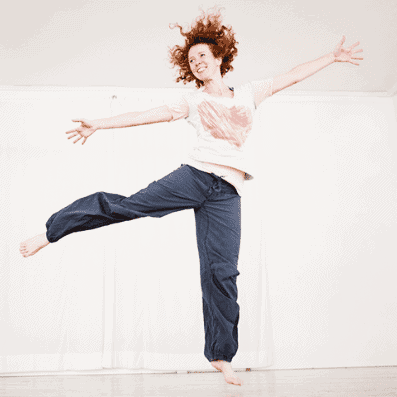
1.2. Das menschlische Skelett
Das Skelett eines Menschen besteht aus ungefähr 206 Knochen. Oben befindet sich der Schädel. Dieser ist direkt mit der Wirbelsäule verbunden. Sie befindet sich senkrecht in der Mitte des Körpers und besteht aus 33 Wirbeln. 12 Rippenpaare sind flexibel mit der Wirbelsäule verbunden. Sie gehen wie Ringe von der Wirbelsäule ab und treffen vorne im Brustbein zusammen. Die untersten beiden Rippenpaare jedoch sind nur mit der Wirbelsäule verbunden. Waagerecht über dem Brustbein gehen zu beiden Seiten die Schlüsselbeine ab, die mit der Schulter verbunden sind. An den Schultern befinden sich die Schulterblätter. In den Armen nennt man den obersten Knochen Oberarmknochen. Der Unterarm setzt sich aus zwei Knochen zusammen. Den oberen nennt man Speiche, den unteren Elle. In der Hand befinden sich insgesamt 27 Knochen. Unten an der Wirbelsäule befindet sich der Beckenknochen. An diesen schließen sich die Beine an. Oben in den Beinen befinden sich die Oberschenkelknochen. Die Unterschenkel setzen sich aus dem vorderen Schienbein und dem hinteren Wadenbein zusammen. Jeder Fuß besteht aus insgesamt 26 Knochen.
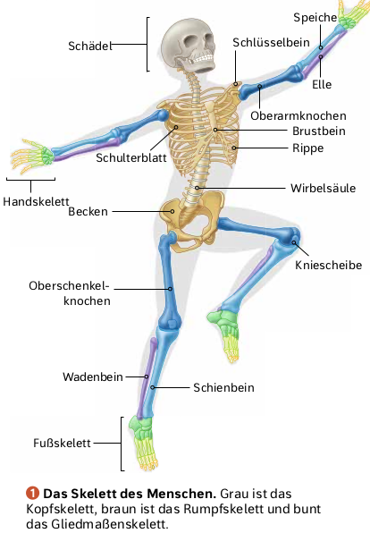
Die Knochen des menschlichen Skeletts sind durch Kalk fest, gleichzeitig durch Knorpel biegsam. Die Knochen von Schulterblatt, Becken und Schädel sind flach wie Platten. Andere sehen aus wie Röhren, z. B. Arm- und Beinknochen. Röhrenknochen sind in erster Linie für Bewegung und Stabilität der Gliedmaßen (Extremitäten) zuständig, während Plattenknochen dem Schutz von Organen und als große Muskelansatzflächen dienen. In allen Knochen befindet sich Knochenmark, das für die Blutbildung wichtig ist.
Das Skelett hat wichtige Aufgaben:
- Das Skelett stützt den Körper von innen und hält ihn aufrecht.
- Herz und Lunge sind durch den Brustkorb geschützt. Der Schädel schützt das Gehirn.
1.3. Wirbelsäule


1.4. Gelenke

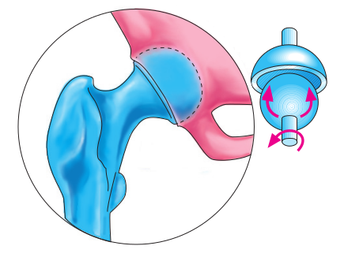
Kugelgelenk (Hüfte)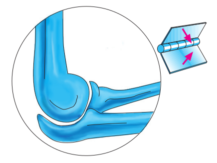
Scharniergelenk (Ellbogen) Drehgelenk (erste beiden Halswirbel)
Drehgelenk (erste beiden Halswirbel) Sattelgelenk (Daumengrundgelenk)
Sattelgelenk (Daumengrundgelenk)1.5. Muskulatur

2. Atmung und Blutkreislauf
Muskeln benötigen Energie, damit sie arbeiten können. Diese steckt in den mit der Nahrung aufgenommenen Nährstoffen. Glukose wird in den Muskelzellen zu Kohlenstoffdioxid und Wasser zerlegt. Dabei wird Energie freigesetzt, die die Muskeln dann nutzen. Dieser Vorgang kann aber nur ablaufen, wenn den Muskelzellen Sauerstoff zur Verfügung steht. Der Körper nimmt den Sauerstoff mit der eingeatmeten Luft auf. Über das Blut gelangt er zu den Zellen der Muskeln und Organe. Gleichzeitig nimmt das Blut das Kohlenstoffdioxid auf und transportiert es in die Lunge.
2.1. Brust- und Bauchatmung
Bauchatmung
Das Zwerchfell ist eine Muskelschicht, die Brust- und Bauchraum voneinander trennt. Im entspannten Zustand ist das Zwerchfell nach oben gewölbt. Beim Einatmen ziehen sich die Muskeln zusammen, wodurch sich das Zwerchfell senkt und somit den Brustraum vergrößert. Die Lungenflügel dehnen sich aus und Luft strömt ein. Beim Ausatmen entspannen sich die Muskeln des Zwerchfells, sodass es sich wieder nach oben wölbt. Dadurch wird der Brustraum verkleinert und die Luft aus der Lunge herausgedrückt. Die Bauchatmung wird auch Zwerchfellatmung genannt.
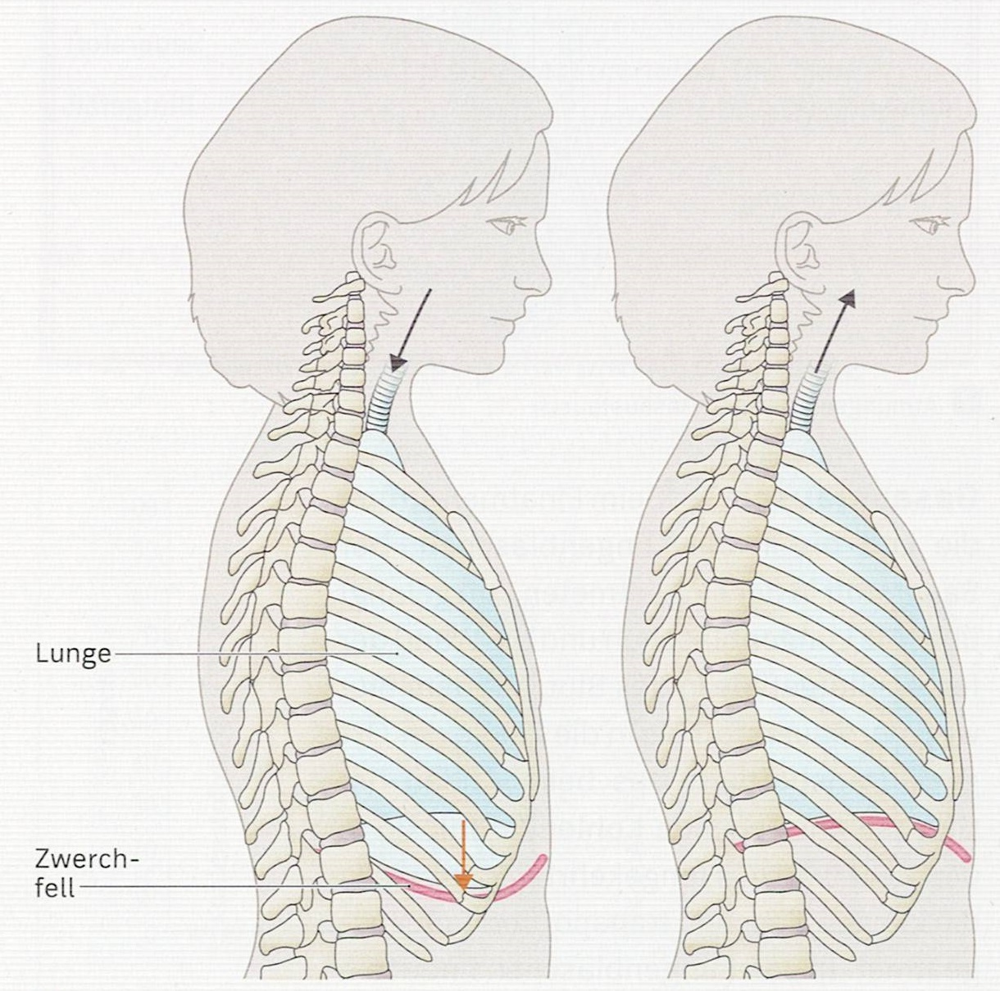
Bei geringer körperlicher Anstrengung erfolgt die Atmung vorwiegend durch das Zwerchfell.
Brustatmung
Beim
Einatmen zieht sich ein Teil der Zwischenrippenmuskulatur zusammen und
hebt so die Rippen an. Dadurch dehnt sich der Brustkorb nach vorne und
zur Seite aus und vergrößert so sein Volumen. Gleichzeitig wird die
Lunge gedehnt und Luft strömt in die Lungenflügel. Beim Erschlaffen der
Zwischenrippenmuskulatur senken sich die Rippen und der Brustkorb. Die
Lungenflügel erschlaffen ebenfalls und die Luft entweicht.
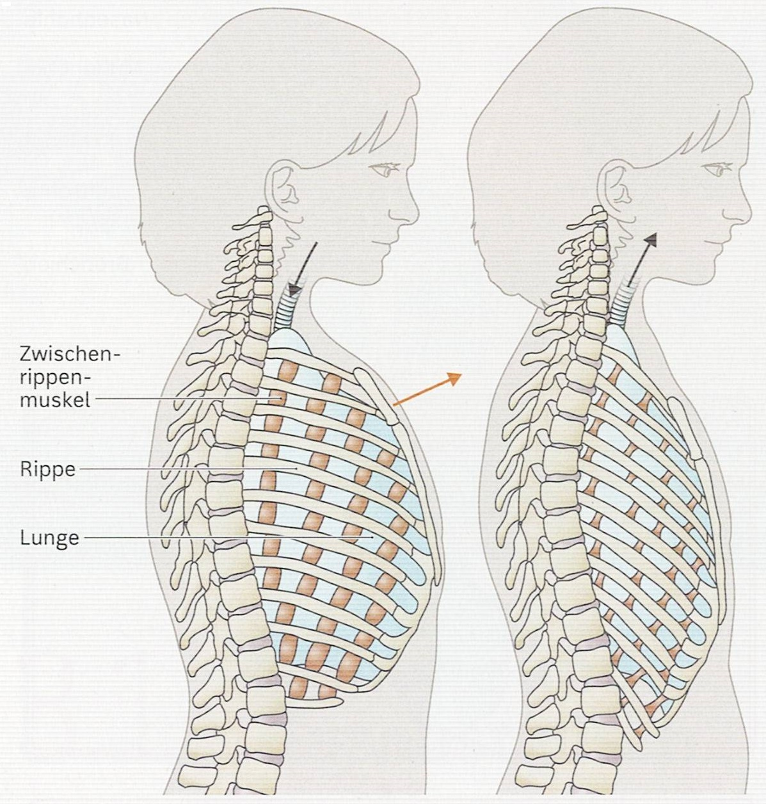
Bei starker körperlicher Anstrengung benötigt der Körper mehr Energie und somit auch mehr Sauerstoff. Deshalb atmet man bei Anstrengung schneller und tiefer ein. Dies wird durch die Brustatmung erreicht.
2.2. Lunge
 Die Luft wird von dem Mund oder der Nase eingatmet. Gesünder ist es durch die Nase zu atmen, da sie wie ein Filter wirkt. Die Nasenschleimhaut ist feucht und hält dadurch Staubteilchen fest. Gleichzeitig wird die eingeatmete Luft befeuchtet und erwärmt. Die Atemluft gelangt dann über den Rachenraum und den Kehlkopf in die Luftröhre. Sie wird durch Knorpelringe ständig offen gehalten. Damit beim Essen keine Nahrungsbestandteile in die Lunge geraten, befindet sich am Kehlkopf der Kehlkopfdeckel. Wenn wir Nahrung schlucken, klappt der Kehlkopfdeckel über den Kehlkopf und verschließt so die Luftröhre. An ihrem unteren Ende teilt sich die Luftröhre in zwei Äste, die Bronchien. Über sie werden die beiden Lungenflügel mit Atemluft versorgt. Die Bronchien verzweigen sich in immer feinere Röhrchen, die Bronchiolen. Am Ende dieser Röhrchen befinden sich etwa 300 Millionen Lungebläschen. Sie ähneln kleinen Weintrauben. Aufgrund ihrer Kugelform bilden sie eine sehr große Oberfläche von ungefähr 100 Quadratmetern.
Die Luft wird von dem Mund oder der Nase eingatmet. Gesünder ist es durch die Nase zu atmen, da sie wie ein Filter wirkt. Die Nasenschleimhaut ist feucht und hält dadurch Staubteilchen fest. Gleichzeitig wird die eingeatmete Luft befeuchtet und erwärmt. Die Atemluft gelangt dann über den Rachenraum und den Kehlkopf in die Luftröhre. Sie wird durch Knorpelringe ständig offen gehalten. Damit beim Essen keine Nahrungsbestandteile in die Lunge geraten, befindet sich am Kehlkopf der Kehlkopfdeckel. Wenn wir Nahrung schlucken, klappt der Kehlkopfdeckel über den Kehlkopf und verschließt so die Luftröhre. An ihrem unteren Ende teilt sich die Luftröhre in zwei Äste, die Bronchien. Über sie werden die beiden Lungenflügel mit Atemluft versorgt. Die Bronchien verzweigen sich in immer feinere Röhrchen, die Bronchiolen. Am Ende dieser Röhrchen befinden sich etwa 300 Millionen Lungebläschen. Sie ähneln kleinen Weintrauben. Aufgrund ihrer Kugelform bilden sie eine sehr große Oberfläche von ungefähr 100 Quadratmetern.
Die Lungenbläschen sind mit sehr feinen Blutgefäßen, den Kapillaren, überzogen. Der Sauerstoff in der eingeatmeten Luft gelangt über die Lungenbläschen und die Wand der feinen Blutgefäße in das Blut. Mit dem Blut wird der Sauerstoff in die Zellen von Muskeln und Organe transportiert. Das beim Abbau von Glukose entstehende Kohlenstoffdioxid wird in umgekehrter Richtung in die Lungenbläschen transportiert und ausgeatmet. In den Lungenbläschen findet also ein Gasaustausch statt.
2.3. Blut

Lässt man Blut einige Zeit im Reagenzglas stehen, bildet sich ein braunroter Bodensatz. Darüber steht eine gelbliche, durchsichtige Flüssigkeit, das Blutplasma. Es besteht zum großen Teil aus Wasser, in dem verschiedene Stoffe gelöst sind. Es beinhaltet zum Beispiel Mineralstoffe und Vitamine sowie die Bausteine von Nährstoffen, aber auch Abfallstoffe. Gleichzeitig verteilt es die Körperwärme über alle Körperteile. Im Gegensatz zum Blutplasma besteht der braunrote Bodensatz aus Zellen:

Weiße Blutzellen/Blutkörperchen (Leukozyten)
Leukozyten haben eine Lebensdauer von etwa zehn Tagen. Sie sind unregelmäßig geformt und besitzen im Gegensatz zu den Erythrozyten einen Zellkern. Die Aufgabe der weißen Blutzellen ist es, in den Körper eingedrungene Krankheitserreger unschädlich zu machen. Bei diesem Abwehrkampf sterben viele der weißen Blutkörperchen und es bildet sich Eiter.
Rote Blutzellen/Blutkörperchen (Erythrozyten)
Die Struktur der Erythrozyten ist rund und scheibenförmig. In der Mitte sind sie an beiden Seiten eingedellt. Die roten Blutzellen leben 100 - 120 Tage. Sie werden im Knochenmark gebildet. Die roten Blutkörperchen erhalten ihre Farbe von dem Blutfarbstoff Hämoglobin. Hämoglobin kann Sauerstoff binden. Es nimmt den Sauerstoff in der Lunge auf und mit dem Blut wird der Sauerstoff im Körper verteilt. Der Sauerstoff löst sich erst vom Hämoglobin ab, wenn die roten Blutzellen an Körperstellen vorbeifließen, die den Sauerstoff benötigen. Im Gegenzug transportieren die Erythrozyten Kohlenstoffdioxid zur Lunge, damit es ausgeatmet werden kann. Je mehr Hämoglobin eine Zelle enthält, desto mehr Sauerstoff kann sie aufnehmen.
Blutplättchen (Thrombozyten)
Die Blutplättchen sind die kleinsten Zellen des Blutes und haben keinen Zellkern. Die Aufgabe von Thrombozyten besteht im Verschließen von Wunden.
2.4. Wundheilung
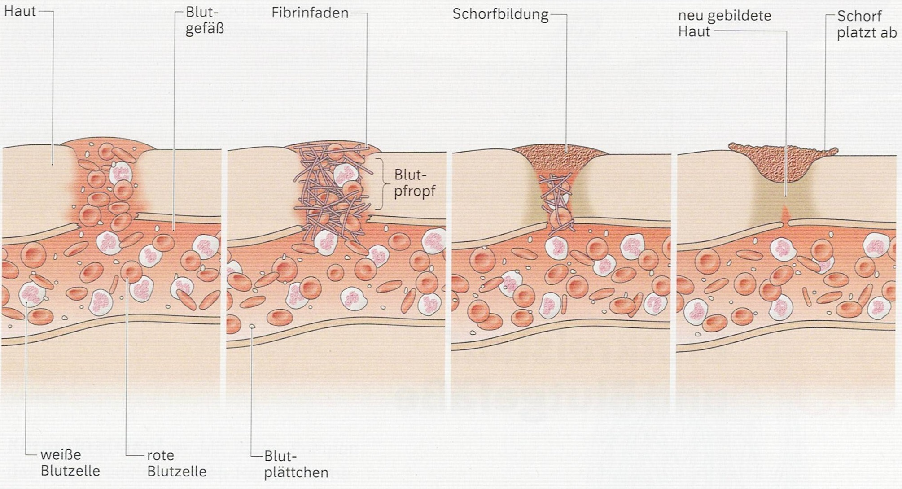
Schneidet man sich und ein Blutgefäß wird verletzt, zieht sich das Blutgefäß zusammen. So wird der Austritt von Blut aus der Wunde verringert. An den Wundrändern heften sich Blutplättchen an. Sie bilden sehr schnell eine dünne Schicht und aktivieren ein im Blutplasma gelöstes Eiweiß. Dieses Eiweiß verändert seine Form zu langen Eiweißfäden, das Fibrin. Es bildet ein engmaschiges Netz im Bereich der Wunde. Dort bleiben die Blutzellen hängen und verklumpen zu einem Blutpfropf, der langsam aushärtet. Die Wunde ist verschlossen. Den gesamten Vorgang nennt man Blutgerinnung. Nach einer gewissen Zeit verändert sich der Blutpfropf zu festem Schorf, der die Wunde schützt. Unter ihm bilden sich neue Zellen und Haut und Blutgefäß sind wieder geschlossen. Die Wundheilung ist abgeschlossen und der Schorf fällt von der verheilten Wunde ab.
2.5. Übung
Aufgabe 1: Nennen Sie die Bestandteile des Blutes.
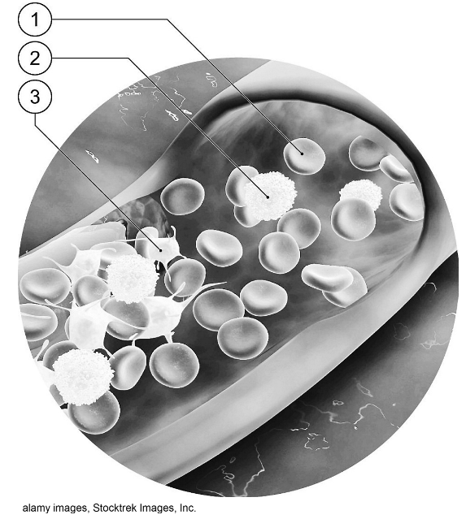
Aufgabe 2: Geben Sie die Funktionen der drei Bestandteile aus Aufgabe 1 sowie des Blutplasmas an.
Aufgabe 3: Beschreiben Sie die Blutgerinnung.
Aufgabe 4: Menschen, die unter Blutarmut (Anämie) leiden, besitzen zu wenig rote Blutkörperchen. Stellen Sie eine begründete Vermutung auf, welche Folgen das für die betroffenen Menschen hat.
2.6. Lösung
Aufgabe 1 und 2:
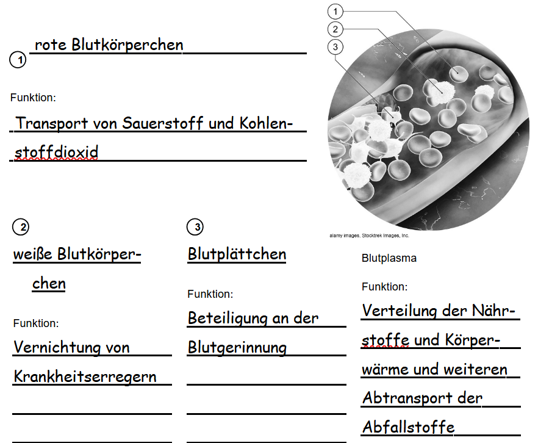
Aufgabe 3:
Bei einer Verletzung sammeln sich Blutplättchen an der Wunde. Sie sorgen für ein Netz aus Eiweißfäden, in dem weitere Blutplättchen, sowie rote und weiße Blutkörperchen hängen bleiben. Die Wunde wird verschlossen, dann bildet sich Schorf.
Aufgabe 4:
Der Sauerstofftransport ist eingeschränkt. Die Menschen leiden unter Atemnot und Erschöpfung, weil die Zellen mit wenig Sauerstoff nur wenig Glukose in Energie umwandeln können.
2.7. Bluttransport
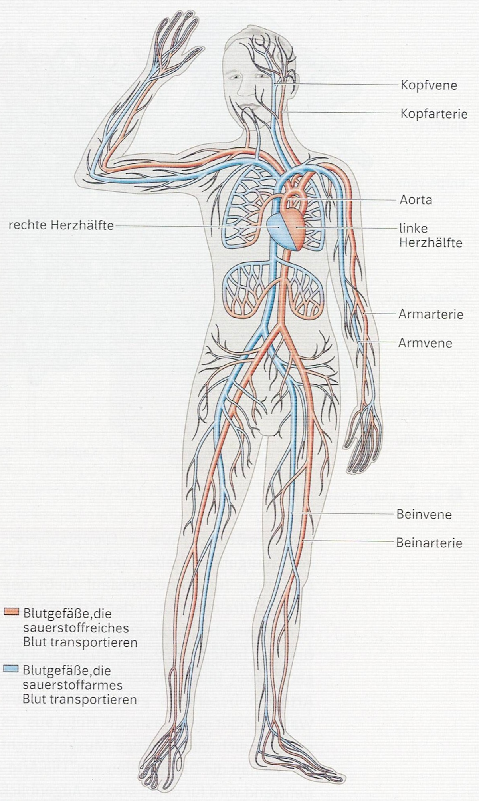
Alle Blutgefäße in unserem Körper sind über 100 000 Kilometer lang. Sie bilden ein weit verzweigtes und geschlossenes Röhrensystem. Verfolgt man den Weg des Blutes vom Herzen aus, wird es zunächst in eine große Arterie, die Aorta, gepumpt. Alle Blutgefäße, die das Blut vom Herzen wegführen, heißen Arterien. Die Aorta verzweigt sich in immer kleinere Arterien, die das Blut zu den Organen und Muskeln führen. Dort verästeln sich die Arterien so fein, dass sie nur noch mit Hilfe eines Mikroskops zu sehen sind. Sie werden dann Kapillaren genannt. Die Wände der Kapillaren sind so dünn, dass ein Stoffaustausch zwischen dem Blut und den Zellen der Organe und Muskeln stattfinden kann. Die Kapillaren vereinigen sich auf dem Weg zum Herz wieder zu größeren Blutgefäßen. Die Blutgefäße, die Blut zum Herzen tranportieren, nennt man Venen.
2.8. Herz
Das menschliche Herz liegt geschützt im Brustraum direkt hinter dem Brustbein. Das Herz ist ein faustgroßer, hohler Muskel. Bei einem erwachsenen Menschen wiegt es etwa 300 g. Der kräftige Herzmuskel pumpt das Blut durch den gesamten Körper. Es benötigt dafür Sauerstoff und energiereiche Nährstoffe. Diese gelangen über die Blutgefäße zum Herzen. Die Blutgefäße verzweigen sich zu vielen kleinen Blutgefäßen, die wie ein Kranz auf dem Herz liegen. Man nennt sie Herzkranzgefäße.

Im Inneren des Herzen befindet sich die Herzscheidewand, die das Organ in eine linke und rechte Hälfte trennt. Jede Herzhälfte besteht aus einem Vorhof und einer Herzkammer. Dabei liegt der kleinere Vorhof oberhalb der größeren Herzkammer. In jeden Vorhof münden zwei Venen und aus jeder Herzkammer geht eine Arterie ab. Zwischen den Herzkammern und den Arterien liegen die Taschenklappen und zwischen den Vorhöfen und Herzkammern die Segelklappen. Diese vier Herzklappen arbeiten wie Ventile: Sie lassen das Blut im Herzen nur in eine Richtung fließen.
Der Herzzyklus ist ein Saug-Druck-Vorgang und besteht aus drei Phasen:
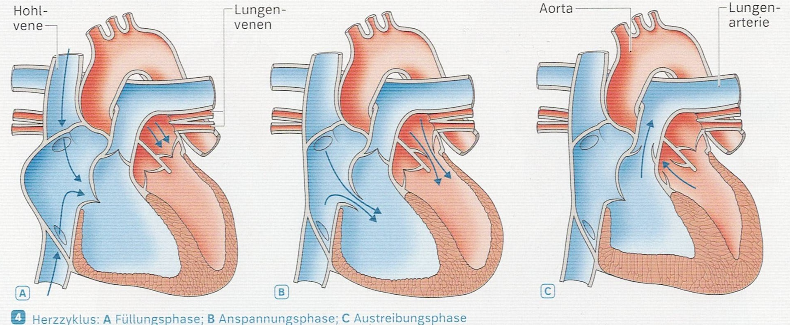
Füllungsphase
Wenn sich die Muskulatur der beiden Vorhöfen entspannt, weiten sich die Vorhöfe und der für das Blut zur Verfügung stehende Raum wird größer. Es entsteht ein Sog und das Blut wird aus den Venen in die Vorhöfe gesaugt. Die Venenklappen verhindern, dass das Blut zurück in die Venen fließen kann.
Anspannungsphase
Danach spannen sich die Muskeln der Vorhöfe an. Durch den Druck öffnen sich die Segelklappen und das Blut wird in die Herzkammern gedrückt.
Austreibungsphase
Wenn die Herzkammern mit Blut gefüllt sind, ziehen sich ihre Muskeln zusammen. Durch den entstehenden Druck schließen sich die Segelklappen und die Taschenklappen werden geöffnet. So kann das Blut in die Arterien strömen.
2.9. Übung
Aufgabe 1: Beschriften Sie die folgende Abbildung.
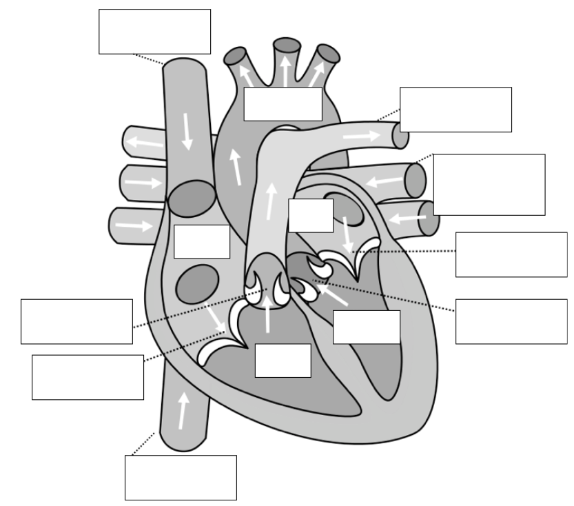
Aufgabe 2: Pulsmessung
Schlägt das Herz, wird Blut in die Arterien gepresst. Diese Druckwelle wandert vom Herzen ausgehend in alle Blutgefäße des Körpers. An den Stellen, an denen Arterien dicht unter der Haut entlanglaufen, wie z. B. am Hals oder am Handgelenk, kann man den Pulsschlag erfühlen. Der Puls ist abhängig von Alter, Trainingszustand und Gesundheit.
a) Legen Sie drei Finger (Zeige-, Mittel- und Ringfinger) auf die Arterie (Daumenseite) direkt unterhalb deines linken Handgelenkes. Sie spüren nun ein leichtes Klopfen – den Puls. Zählen Sie eine Minute lang die Anzahl der Pulsschläge und notieren Sie den Wert.
b) Machen Sie nun 15 Kniebeugen. Direkt im Anschluss wird erneut der Puls gemessen. Notieren Sie auch diesen Wert.
c) Begründen Sie, weshalb die Pulsfrequenz mit zunehmender körperlicher Anstrengung ansteigt.
Aufgabe 3: Ordnen Sie die folgenden Vorgänge der Druckphase oder der Saugphase zu und notieren Sie die Sätze in einer sinnvollen Reihenfolge in der Tabelle.
Das Herz entspannt sich.
Das Blut wird aus den Herzkammern in die Arterien gedrückt.
Die Herzkammern saugen das Blut aus den Vorhöfen an.
Dabei sind die Taschenklappen geöffnet, die Segelklappen geschlossen.
Die Segelklappen öffnen sich.
Das Herz zieht sich zusammen.
.png)
2.10. Lösung
Aufgabe 1:
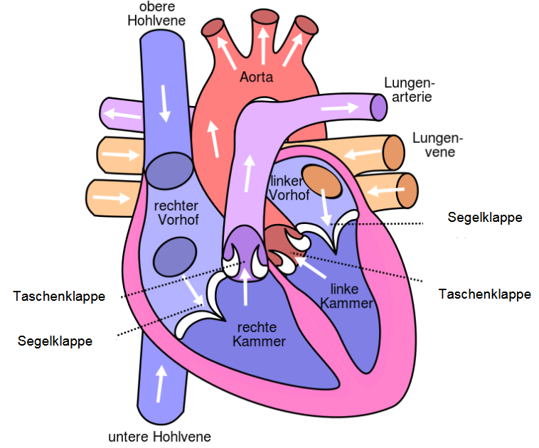
Aufgabe 2:
a) Ruhepuls: 50 – 100 Schlägen pro Minute
b) Puls nach körperlicher Anstrengung: 80 – 140 Schlägen pro Minute
c) Bei Belastung (z.B. Sport) erhöht sich der Energiebedarf des Körpers. Das Blut muss schneller zirkulieren, damit ausreichend Sauerstoff für die Zellatmung zu den Zellen (Organen) transportiert wird. Um die Energiebereitstellung in den Mitochondrien zu erhöhen, muss die Pulsfrequenz zunehmen.
Aufgabe 3:
.png)
2.11. Blutkreislauf
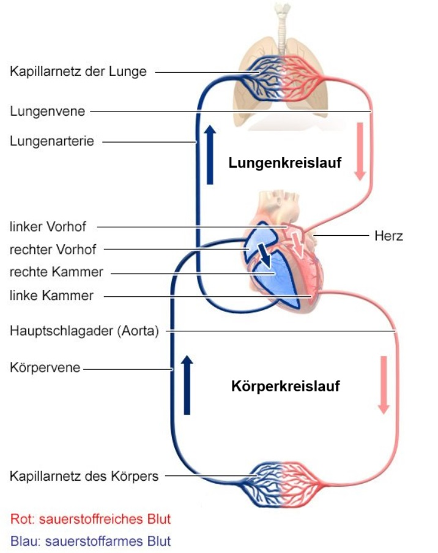
Körperkreislauf
Mit dem Pumpen des Blutes aus der linken Herzhälfte beginnt der Körperkreislauf.
Das sauerstoffreiche Blut fließt durch die Körperarterien und
Kapillaren bis zu den Organen und Muskeln. In den Zellen der Muskeln und Organe wird mithilfe des Sauerstoffs Energie aus Glucose gewonnen. Dabei entsteht Kohlenstoffdioxid. Die Kapillaren nehmen den Kohlenstoffdioxid auf und das sauerstoffarme und kohlenstoffdioxidreiche Blut
fließt über die Körpervenen zurück zur rechten Herzhälfte.
Lungenkreislauf
Im Lungenkreislauf wird
das Blut von der rechten Herzhälfte in die Lungenarterie gedrückt. Die
Lungenarterie verzweigt sich, sodass das Blut zu den Lungenflügeln
fließen kann. Die Arterien verästeln sich in immer feiner werdende
Blutgefäße. Jedes Lungenbläschen ist schließlich von einem Netz feiner
Kapillaren überzogen. Aus dem Blut in den Kapillaren wird dann
Kohlenstoffdioxid in die Lungenbläschen abgegeben. Das Kohlenstoffdioxid
wird über die Lunge ausgeatmet. Gleichzeitig gelangt aus den
Lungenbläschen der eingeatmete Sauerstoff aus der Luft in das Blut der
Kapillaren. Das sauerstoffreiche Blut fließt dann über die Lungenvene in
die linke Herzhälfte zurück.
Blutkreislauf
Körperkreislauf und Lungenkreislauf bilden zusammen den Blutkreislauf.